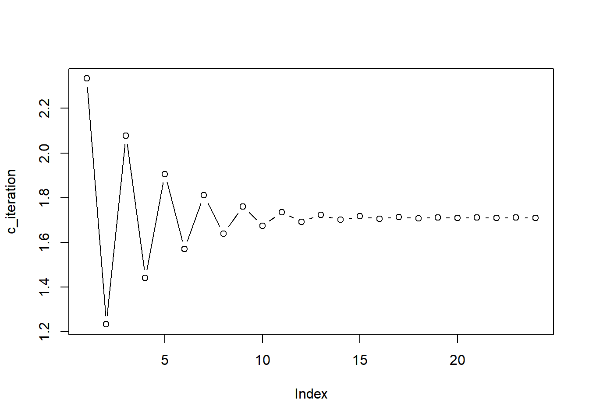

Chapter 6 Generalized Linear Mixed Models
6.1 Computing techniques
Since GLMM can use EM algorithm in its maximum likelihood calculation (see McCulloch, 1994), it is practically useful to rehearse EM and other computing techniques.
6.1.1 Monte carlo approximation
Example: calculate the integral of \(p(z>2)\) when \(z \sim N(0,1)\). To use Monte Carlo approximation, we can have an indicator function, which will determine whether the sample from \(N(0,1)\) will be included into the calculation of the integral.
Nsim=10^4
indicator=function(x){
y=ifelse((x>2),1,0)
return(y)}
newdata<-rnorm(Nsim, 0,1 )
mc=c(); v=c(); upper=c(); lower=c()
for (j in 1:Nsim)
{
mc[j]=mean(indicator(newdata[1:j]))
v[j]=(j^{-1})*var(indicator(newdata[1:j]))
upper[j]=mc[j]+1.96*sqrt(v[j])
lower[j]=mc[j]-1.96*sqrt(v[j])
}
library(ggplot2)
values=c(mc,upper,lower)
type=c(rep("mc",Nsim),rep("upper",Nsim),rep("lower",Nsim))
iter=rep(seq(1:Nsim),3)
data=data.frame(val=values, tp=type, itr=iter)
Rcode<-ggplot(data,aes(itr,val,col=tp))+geom_line(size=0.5)
Rcode+geom_hline(yintercept=1-pnorm(2),color="green",size=0.5)## Warning: Removed 2 rows containing missing values (geom_path).6.1.2 Importance sampling
Importance sampling has samples generated from a different distribution than the distribution of interest. Specifically, assume that we want to calculate the expected value of \(h(x)\), and \(x \sim f(x)\).
\[E(h(x))=\int h(x) f(x) dx = \int h(x) \frac{f(x)}{g(x)} g(x) dx \] We can sample \(x_i\) from \(g(x)\) and then calculate the mean of \(h(x_i) \frac{f(x_i)}{g(x_i)}\).
Using the same explane above, we can use a shifted exponential distribution to help calculate the intergral for normal distribution. Specifically,
\[\int_2^{\infty} \frac{1}{2 \pi} e^{-\frac{1}{2}x^2}dx = \int_2^{\infty} \frac{\frac{1}{2 \pi} e^{-\frac{1}{2}x^2}}{e^{-(x-2)}} e^{-(x-2)}dx \] The idea is that, we can generate \(x_i\) from exponential distribution of \(e^{-(x-2)}\), and then insert them into the targeted “expected (value) function” of \(\frac{\frac{1}{2 \pi} e^{-\frac{1}{2}x^2}}{e^{-(x-2)}}\). Thus, as you can see, importance sampling is based on the law of large numbers (i.e., If the same experiment or study is repeated independently a large number of times, the average of the results of the trials must be close to the expected value). We can use it to calculate integral based on link of the definition of expected value.
Nsim=10^4
normal_density=function(x)
{y=(1/sqrt(2*pi))*exp(-0.5*(x^2))
return(y)}
x=2-log(runif(Nsim))
ImpS=c(); v=c(); upper=c(); lower=c()
for (j in 1:Nsim)
{
ImpS[j]=mean(normal_density(x[1:j])/exp(-(x[1:j]-2)))
v[j]=(j^{-1})*var(normal_density(x[1:j])/exp(-(x[1:j]-2)))
upper[j]=ImpS[j]+1.96*sqrt(v[j])
lower[j]=ImpS[j]-1.96*sqrt(v[j])
}
library(ggplot2)
values=c(ImpS,upper,lower)
type=c(rep("mc",Nsim),rep("upper",Nsim),rep("lower",Nsim))
iter=rep(seq(1:Nsim),3)
data=data.frame(val=values, tp=type, itr=iter)
ggplot(data,aes(itr,val,col=tp))+geom_line(size=0.5)+
geom_hline(yintercept=1-pnorm(2),color="green",size=0.5)## Warning: Removed 2 rows containing missing values (geom_path).
6.1.3 Newton Raphson algorithm
For nonlinear functions, it is sometimes difficult to calculate MLEs. Newton Raphson algorithm is an iterative procedure to calculate MLEs.
The basic idea of Newton Raphson is to find a approximate function that can be easily maximized analytically. We need some theoretical background from Taylor’s Theorem.
If \(f\) has \(k+1\) times differentiable on an open interval \(I\). For any \(x\) and \(x+h\) in \(I\), there is a point of \(w\) between \(x\) and \(x+h\) where we can get the following:
\[f(x+h)=f(x)+f^{'}h+\frac{1}{2}f^{''}h^2+...+\frac{1}{k!}f^{[k]}(x)h^k+\frac{1}{(k+1)!}f^{[k+1]}(w)h^{k+1}\] If \(h\) goes to be close to \(0\), the higher order terms will go to \(0\) as well. Thus, we can get:
\[f(x+h) \approx f(x)+f^{'}(x)h \] This is the first order Taylor approximation of \(f\) at \(x\). In a similar vein, we also have the second order Taylor approximation of \(f\) at \(x\) as follows.
\[f(x+h)=f(x)+f^{'}h+\frac{1}{2}f^{''}h^2\] For the first order, we can rewrite it as follows.
\[f(x+h) \approx f(x)+f^{'}(x)h = a+bh\] where,
\[ a = f(x), b=f^{'}(x)\] Similarly,
\[f(x+h)\approx f(x)+f^{'}(x)h+\frac{1}{2}f^{''}(x)h^2=a+bh+\frac{1}{2}ch^2\] We can calculate the derivative with respect to \(h\), we can get:
\[f^{'}(x+h) \approx b+ch\] We can then set it to zero, and get:
\[0=b+c \hat{h}\] Thus, we can get,
\[\hat{h} = -\frac{b}{c}=-\frac{f^{'}(x)}{f^{''}(x)}\] Thus, we can get that the following can maximize \(f\) at \(x\):
\[x+\hat{h}=x-\frac{f^{'}(x)}{f^{''}(x)}\] Thus, the basic idea of Newton Raphson algorithm is as follows. - set a tolerance (typically a very small number) - Check if \(|f^{'}(x)|< the tolerance\). If not, \(i \leftarrow i+1; x_i\leftarrow x_{i-1}-\frac{f^{'}(x_{i-1})}{f^{''}(x_{i-1})}\)
- Use Newton Raphson to calculate the logistic regression
Suppose we have \(n\) observation, and \(m\) variables.
\[\begin{bmatrix} x_{11} & x_{12} & x_{13} & ... & x_{1m}\\ x_{21} & x_{22} & x_{23} & ... & x_{2m} \\ ...\\ x_{n1} & x_{n2} & x_{n3} & ... & x_{nm} \end{bmatrix}\]
Typically, we add a vector of \(1\) being used to estimate the constant.
\[\begin{bmatrix} 1 & x_{11} & x_{12} & x_{13} & ... & x_{1m}\\ 1 & x_{21} & x_{22} & x_{23} & ... & x_{2m} \\ ...\\ 1 & x_{n1} & x_{n2} & x_{n3} & ... & x_{nm} \end{bmatrix}\]
And, we have observe a vector of \(n\) \(y_i\) as well, which is a binary variable:
\[Y = \begin{bmatrix}1 \\ 0 \\ 1 \\ 0 \\ 0 \\ 0 \\ ...\\ 1 \\ \end{bmatrix}\]
Using the content from the MLE chapter, we can get:
\[\mathbf{L}=\prod_{i=1}^{n} p_i^{ y_i}(1-p_i)^{(1-y_i)}\]
Further, we can get a log-transformed format.
\[log (\mathbf{L})=\sum_{i=1}^{n}[y_i log (p_i) + (1-y_i) log(1-p_i)]\] Given that \(p_i=\frac{e^{\beta_0+\beta_1x_1+...+\beta_nx_n}}{1+e^{\beta_0+\beta_1x_1+...+\beta_nx_n}}=\frac{e^{\beta^Tx}}{1+e^{\beta^Tx}}\), we can rewrite it as follows:
\[log (\mathbf{L})=\ell=\sum_{i=1}^{n}[y_i log (\frac{e^{\beta^Tx_i}}{1+e^{\beta^Tx_i}}) + (1-y_i) log(1-\frac{e^{\beta^Tx_i}}{1+e^{\beta^Tx_i}})]\] Before doing the derivative, we set. \[\frac{e^{\beta^Tx_i}}{1+e^{\beta^Tx_i}} = p(\beta ^T x_i)\]
\[log (\mathbf{L})=\ell=\sum_{i=1}^{n}[y_i log (p(\beta ^T x_i)) + (1-y_i) log(1-p(\beta ^T x_i))]\]
Note that, \(\frac{\partial p(\beta ^T x_i)}{\partial (\beta ^T x_i)} = p(\beta ^T x_i)(1-p(\beta ^T x_i))\). We will use it later.
\[\begin{aligned} \frac{\partial \ell} {\partial \beta} &= \sum_{i=1}^{n} [y_i \frac{1}{p(\beta ^T x_i)} \frac{\partial p(\beta ^T x_i)}{\partial (\beta ^T x_i)}\frac{\partial (\beta ^T x_i)}{\partial \beta}+(1-y_i) \frac{1}{1-p(\beta ^T x_i)}(-1)\frac{\partial p(\beta ^T x_i)}{\partial (\beta ^T x_i)}\frac{\partial (\beta ^T x_i)}{\partial \beta}] \\ &= \sum_{i=1}^{n} x_i^T[y_i \frac{1}{p(\beta ^T x_i)} p(\beta ^T x_i)(1-p(\beta ^T x_i))+(1-y_i) \frac{1}{1-p(\beta ^T x_i)}(-1)p(\beta ^T x_i)(1-p(\beta ^T x_i))] \\ &= \sum_{i=1}^{n} x_i^T[y_i \frac{1}{p(\beta ^T x_i)} p(\beta ^T x_i)(1-p(\beta ^T x_i))-(1-y_i) \frac{1}{1-p(\beta ^T x_i)}p(\beta ^T x_i)(1-p(\beta ^T x_i))] \\ &= \sum_{i=1}^{n} x_i^T[y_i (1-p(\beta ^T x_i))-(1-y_i) p(\beta ^T x_i)] \\ &=\sum_{i=1}^{n} x_i^T[y_i-y_ip(\beta ^T x_i)-p(\beta ^T x_i)+y_i p(\beta ^T x_i)] \\ &=\sum_{i=1}^{n} x_i^T[y_i-p(\beta ^T x_i)] \\ &= \sum_{i=1}^{n} x_i^T[y_i-\frac{e^{\beta^Tx_i}}{1+e^{\beta^Tx_i}}] \end{aligned}\]
As noted, the Newton Raphson algorithm needs the second order.
\[\begin{aligned} Second order &=\frac{\partial \sum_{i=1}^{n} x_i^T[y_i-p(\beta ^T x_i)]}{\partial \beta} \\ &=-\sum_{i=1}^{n} x_i^T\frac{\partial p(\beta ^T x_i) }{\partial \beta}\\ &=-\sum_{i=1}^{n} x_i^T\frac{\partial p(\beta ^T x_i) }{\partial (\beta^Tx_i)} \frac{\partial (\beta^Tx_i)}{\partial \beta}\\ &=-\sum_{i=1}^{n} x_i^T p(\beta ^T x_i)(1-p(\beta ^T x_i))x_i \end{aligned}\]
The following are the data simulation (3 IVs and 1 DV) and Newton Raphson analysis.
# Data generation
set.seed(123)
n=500
x1_norm<-rnorm(n)
x2_norm<-rnorm(n,3,4)
x3_norm<-rnorm(n,4,6)
x_combined<-cbind(1,x1_norm,x2_norm,x3_norm) # dimension: n*4
coefficients_new<-c(1,2,3,4) #true regression coefficient
inv_logit<-function(x,b){exp(x%*%b)/(1+exp(x%*%b))}
prob_generated<-inv_logit(x_combined,coefficients_new)
y<-c()
for (i in 1:n) {y[i]<-rbinom(1,1,prob_generated[i])}
# Newton Raphson
#We need to set random starting values.
beta_old<-c(1,1,1,1)
tolerance=1e-3
max_its=2000;iteration=1;difference=2
W<-matrix(0,n,n)
while(difference>tolerance & iteration<max_its)
{
# The first order
f_firstorder<-t(x_combined)%*%(y-inv_logit(x_combined,beta_old))
# The second order
diag(W) = inv_logit(x_combined,beta_old)*(1-inv_logit(x_combined,beta_old))
f_secondorder<--t(x_combined)%*%W%*%x_combined
# Calculate the beta_updated
beta_updated=beta_old-(solve(f_secondorder)%*%f_firstorder)
difference=max(abs(beta_updated-beta_old));
iteration=iteration+1;
beta_old=beta_updated}
beta_old## [,1]
## 0.9590207
## x1_norm 1.7974165
## x2_norm 3.0072303
## x3_norm 3.9578107\[\frac{\partial \ell} {\partial \beta} = \sum_{i=1}^{n} [y_i \frac{1}{p(\beta ^T x_i)} \frac{\partial p(\beta ^T x_i)}{\partial (\beta ^T x_i)}\frac{\partial (\beta ^T x_i)}{\partial \beta}+(1-y_i) \frac{1}{1-p(\beta ^T x_i)}(-1)\frac{\partial p(\beta ^T x_i)}{\partial (\beta ^T x_i)}\frac{\partial (\beta ^T x_i)}{\partial \beta}] \] \[=\sum_{i=1}^{n} [y_i \frac{1}{p(\beta ^T x_i)} \phi (\beta ^T x_i)-(1-y_i) \frac{1}{1-p(\beta ^T x_i)}\phi (\beta ^T x_i)]x_i\]
\[\Phi(\beta_0+\beta_1x_1+\beta_2x_2+\beta_3x_3)= p(y=1)\]
# Data generation
n=500
x1_norm<-rnorm(n)
x2_norm<-rnorm(n)
x3_norm<-rnorm(n)
x_combined<-cbind(1,x1_norm,x2_norm,x3_norm)
coefficients_new<-c(2,2,3,3) #true regression coefficient
inv_norm<-function(x,b){pnorm(x%*%b)}
prob_generated<-inv_norm(x_combined,coefficients_new)
y<-c()
for (i in 1:n) {y[i]<-rbinom(1,1,prob_generated[i])}
# Newton Raphson
#We need to set random starting values.
x_old<-c(1,1,1,1)
tolerance=1e-3
max_its=2000;iteration=1;difference=2
while(difference>tolerance & iteration<max_its){
x_updated=x_old-(f_firstorder(x_old)/f_secondorder(x_old))
difference=abs(x_updated-x_old);
iteration=iteration+1;
x_old=x_updated
c_iteration<-c(c_iteration,x_updated)}
plot(c_iteration,type="b")Some links related to this topic (canonical link function): http://www.win-vector.com/blog/2011/09/the-simpler-derivation-of-logistic-regression/ https://en.wikipedia.org/wiki/Generalized_linear_model#Link_function https://stats.stackexchange.com/questions/40876/what-is-the-difference-between-a-link-function-and-a-canonical-link-function https://stats.stackexchange.com/questions/344309/why-using-newtons-method-for-logistic-regression-optimization-is-called-iterati https://www.stat.washington.edu/adobra/classes/536/Files/week1/newtonfull.pdf https://tomroth.com.au/logistic/ https://www.stat.cmu.edu/~cshalizi/350/lectures/26/lecture-26.pdf
http://seankross.com/2019/10/27/R-as-a-First-Programming-Language.html
6.2 Basics of GLMM
Recall the formula in the probit model:
\[Y^*=X\beta+\epsilon, \epsilon \sim N(0,\sigma^2)=N(0,I)\] Similar to LMM, binary model with random effect can be written as follows.
\[Y^*=X\beta+ Z u+\epsilon\] where,
\[\epsilon \sim N(0,I)\] \[u \sim N(0, D)\]
We also assume \(\epsilon\) and \(u\) are independent.Thus, we know that \(D\) represents the virances of the random effects. If we make \(u =1\), the model becomes the usual probit model. McCulloch (1994) states that there are a few advantages to use probit, rather than logit models.
The following is the note from Charle E. McCulloch’s “Maximum likelihood algorithems for Generalized Linear Mixed Models”